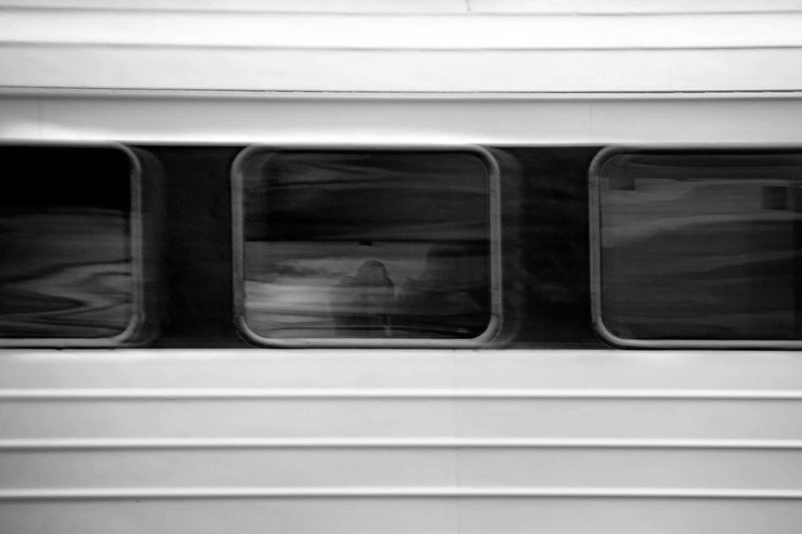
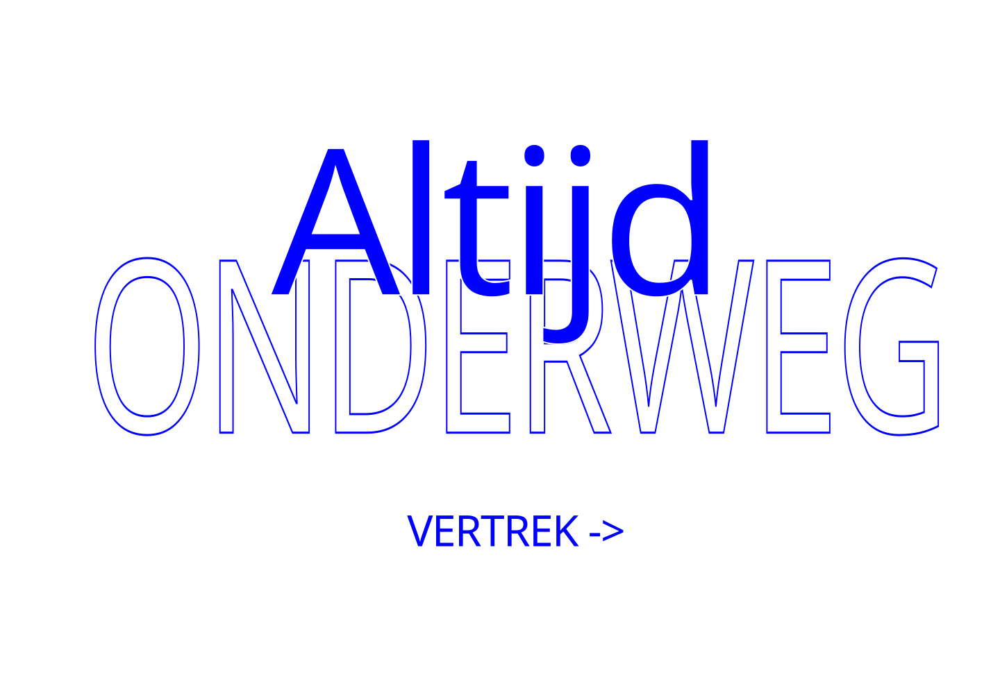

Van hier naar daar van daar naar hier, met de trein, met de fiets, te voet, van kot naar school van school naar kot van kot naar huis van huis naar kot van kot naar de winkel naar kot met de fiets, te voet, met de tram, met de trein naar huis. Van hier naar daar van daar naar hier, met de trein, met de fiets, te voet, van kot naar school van school naar kot van kot naar huis van huis naar kot van kot naar de winkel naar kot met de fiets, te voet, met de tram, met de trein naar huis.

VERTREK